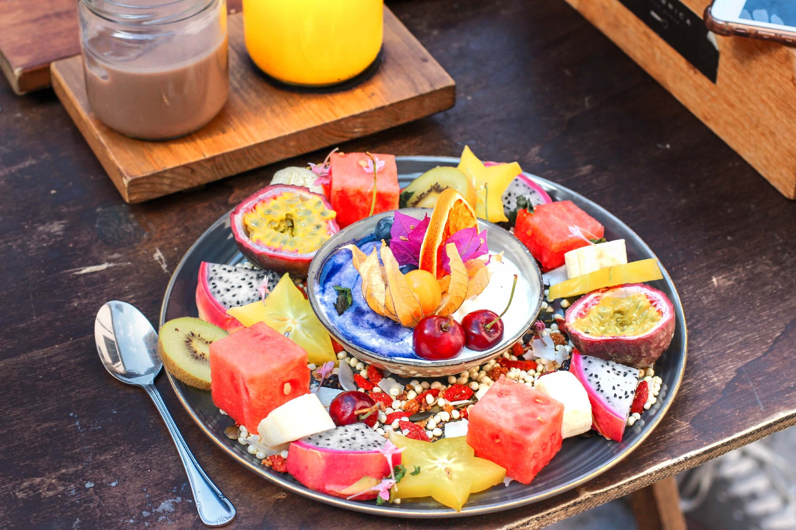

Tropical
Feast
Ingredients
Instruction: Arrange all the cut fruit on a platter. Take out the greek yogurt, almond milk, frozen blueberries and blend. Mix until thick consistency. Scoop the mixure into a bowl ,and put it at the center of the platter and enjoy!